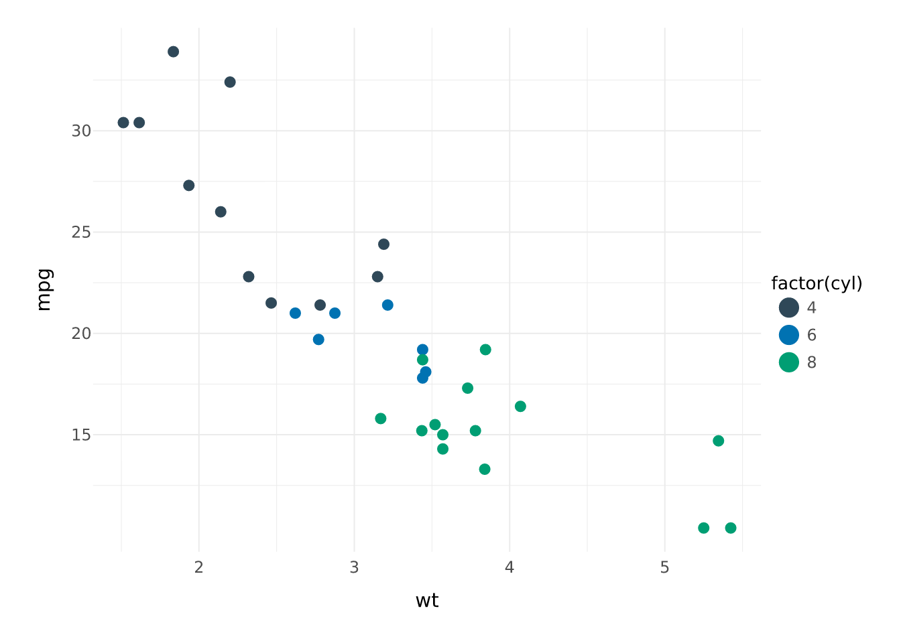
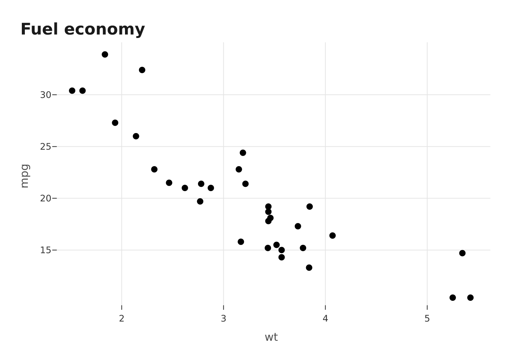
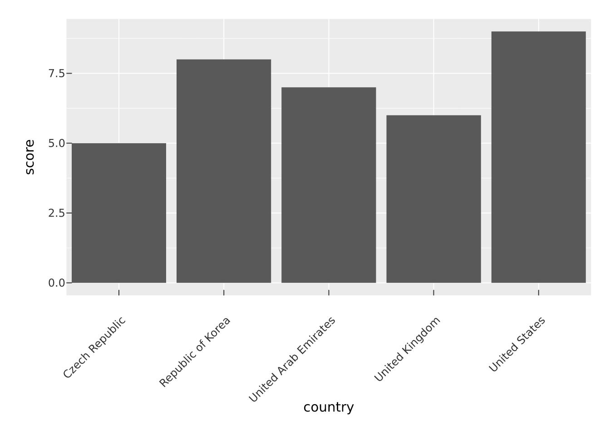
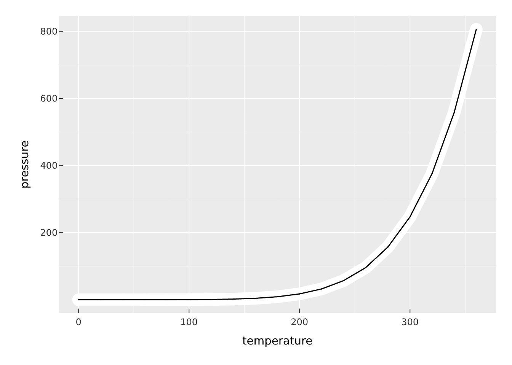
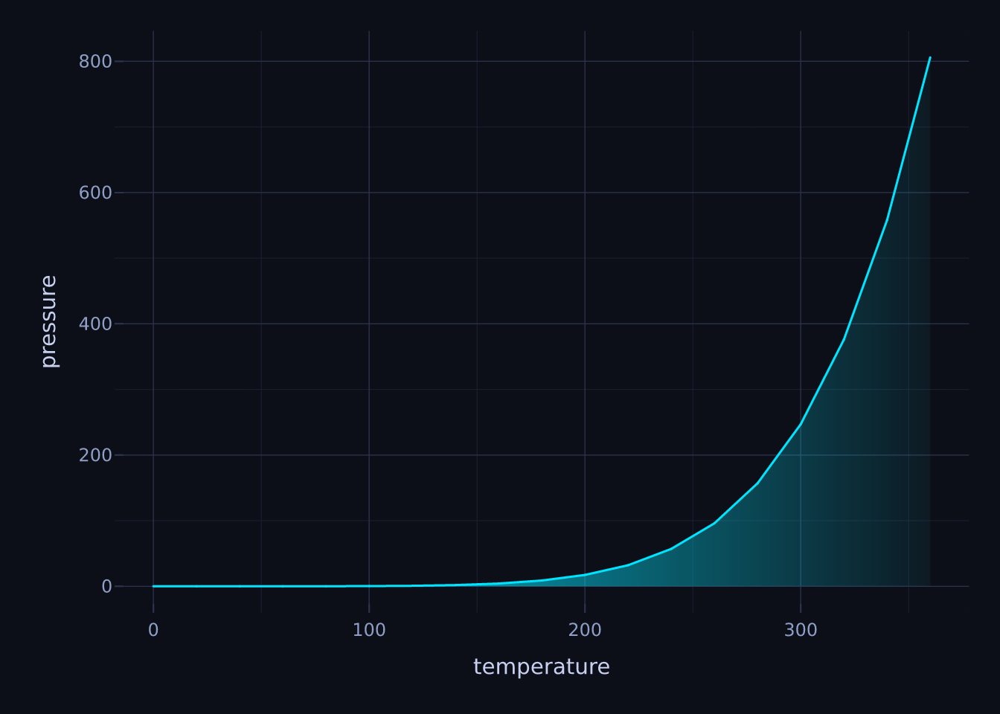

vplot(mtcars) |>
mark_point(x = wt, y = mpg, color = factor(cyl)) |>
theme_minimal()
Everything so far has been about mapping data. This article is about the rest: the panel, the gridlines, the fonts, and a set of render effects that change how marks are painted. vellumplot keeps these separate. A theme controls the non-data furniture of the whole plot; a layer effect changes how one mark is drawn; a gradient is a fancy fill value; and sketch mode turns the whole thing hand-drawn.
A theme sets the look of everything that is not a mark. vellumplot ships several. theme_gray() is the default (grey panel, white gridlines); theme_minimal() drops the panel fill; theme_bw() is a white panel with light grey gridlines; theme_classic() gives axis lines and no gridlines; theme_void() strips everything but the marks, legend, and titles.
vplot(mtcars) |>
mark_point(x = wt, y = mpg, color = factor(cyl)) |>
theme_minimal()
theme() overrides individual slots, and each slot is described by a typed element: element_text(), element_line(), element_rect(), or element_blank() to draw nothing. Slot names follow the familiar dotted scheme (panel.grid.minor, axis.title, plot.title, and so on), and any property left NULL is inherited from its parent in the theme tree.
vplot(mtcars) |>
mark_point(x = wt, y = mpg) |>
theme_bw() |>
theme(
panel.grid.minor = element_blank(),
plot.title = element_text(size = 16, face = "bold"),
axis.title = element_text(color = "grey30")
) |>
labs(title = "Fuel economy")
Effects change how a single mark is painted, and they are passed to a mark’s effects argument as a list. They apply to stroked and point marks. glow() draws widened, low-opacity copies beneath the mark for a neon halo; shadow() adds an offset drop shadow; outline() puts a contrasting halo behind the mark so it stays legible over a busy backdrop. motion() and echo() draw a fading trail of copies marching off along a direction — a speed-blur (motion(), many close copies) or discrete ghost repeats (echo()).
vplot(pressure) |>
mark_line(
x = temperature, y = pressure,
effects = list(shadow(), outline(color = "white", size = 2))
)
vplot(mtcars) |>
mark_point(x = wt, y = mpg, size = 4, effects = list(motion(x = 4)))
glow() pairs naturally with theme_cyberpunk(), a dark neon theme.
vplot(mtcars) |>
mark_point(x = wt, y = mpg, color = factor(cyl), effects = list(glow())) |>
theme_cyberpunk()
A gradient is an unscaled value for the fill aesthetic, not a mapped scale. Pass linear_gradient() or radial_gradient() directly as a fill and the region is painted with it as one paint. Using a transparent stop gives the “fade out under a line” look.
vplot(pressure) |>
mark_area(
x = temperature, y = pressure,
fill = linear_gradient(c("#00e5ff", "#00e5ff00"))
) |>
mark_line(x = temperature, y = pressure, color = "#00e5ff") |>
theme_cyberpunk()
Because a gradient is one paint per region, it cannot be mapped to a data column; for that you want a colour scale (see Scales and guides).
theme_sketch() turns an entire plot hand-drawn in one line: wobbly gridlines, axis lines, and marks, on a warm paper background. The look is generated natively in the engine, so it is exact and works across PNG, SVG, and PDF.
vplot(mtcars) |>
mark_bar(x = factor(cyl), fill = factor(cyl)) |>
theme_sketch()
For finer control, sketch() is the vocabulary: roughness, bowing, fill_style ("hachure", "crosshatch", "zigzag", and more), and so on. Pass a sketch() value to a single mark’s sketch = argument to rough up just that layer, or to an element_line() / element_rect() slot inside theme(). Set sketch = NA on a mark to force it crisp even under a plot-wide theme_sketch().